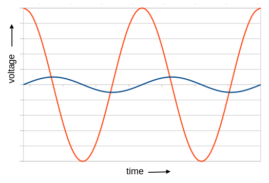
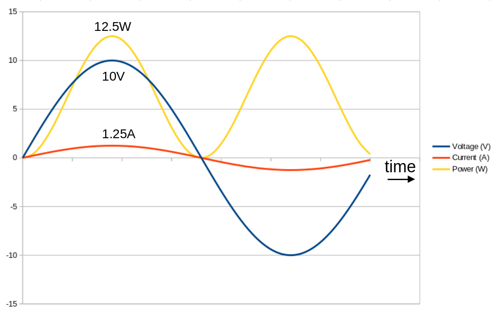

Why "RMS watts" is a useless measure of power
 Manufacturers of hifi equipment -- particularly amplifiers and
loudspeakers -- frequently refer to power in terms of
"RMS watts", or "watts RMS". In this article I will explain that
this is a meaningless measure of power, which does not represent
anything of interest in the physical world.
Manufacturers of hifi equipment -- particularly amplifiers and
loudspeakers -- frequently refer to power in terms of
"RMS watts", or "watts RMS". In this article I will explain that
this is a meaningless measure of power, which does not represent
anything of interest in the physical world.
It is my hope that the designers of electronic equipment know this perfectly well, and that it is merely a marketing strategy: perhaps it creates an aura of technical authenticity to write "RMS" on the end of every number. Whatever the explanation, this practice is widespread, and unnecessary, as I will explain.
There's a bit of math in this article, because I want it to be reasonably rigorous -- I'm not just claiming that it makes no sense to express a power as an RMS value: I'm proving it. If you have no interest in the math, that shouldn't be a problem -- I think the argument is carried without it. However, I do assume some basic knowledge of electricity. If you don't know what an amp is, you might consider reading my ten-minute guide to electrical theory first.
The origin of the problem
In electronic engineering it is common to refer to alternating currents, and the voltages associated with them, using "RMS" values. RMS stands for "root mean square", and is a representation of the energy or power associated with the signal, which may have an average value which is, in fact, zero.
Consider the two standard sinewave voltages shown below.

The red voltage waveform is clearly "larger", in terms of amplitude, than the blue waveform and, all else being equal, will be associated with a larger amount of energy. But both waveforms have an average amplitude of zero. Clearly, in order to compare the energies (or powers) associated with these two waveforms, we need something more than a simple average.
What we could do is to take the absolute value of the waveform, that is, invert the negative part of it. The resulting waveform would be positive everywhere, and would have a non-zero average. This average calculated for the red waveform would be larger than that of the blue waveform, so we seem to have a valid measure.
In practice, when discussing alternating currents and voltages, we typically use the RMS measure, not the average of the absolute value of the amplitude, or any other representative figure. The reason for this is related to the fact that voltages and currents multiply to give power, as I shall explain.
Power, voltage, and current
In general, the power delivered to any electronic component at some instant in time is equal to the voltage measured across it, multiplied by the current flowing through it. This applies to loudspeakers, motors, lightbulb filaments -- everything that conducts electricity. Power, like voltage and current, is a time-varying quantity. Mathematically we make this time-dependence explicit like this:
$$ P(t) = I(t) V(t) $$Where P, I, and V, are power, current, and voltage, and all vary with time, t. If the electrical device is a resistor, or behaves like a resistor, we can derive the power just from the voltage, or just from the current, since we know from Ohm's law that
$$ V(t) = I(t) R $$The resistance, R, does not have a "(t)" suffix, because it is not time-varying (usually). Combining the two previous formulae we can write the expression for power in terms of voltage:
$$ P(t) = \frac{V(t)^2}{R} $$Since a loudspeaker behaves somewhat like a resistance, we can at least estimate the speaker power from the amplifier's output voltage, given an estimate of the speaker resistance. You might notice from the previous formula that the power decreases with resistance. So, all else being equal, doubling the speaker resistance will halve the power delivered to it. This is why the output power of amplifiers will usually be specified for a particular speaker resistance -- typically eight ohms.
Voltage and current are both time-varying waveforms, and the current and voltage in a particular component may have peaks at different times. This won't happen in a resistor, but it may happen with more complex components. A loudspeaker coil, in particular, has capacitance and inductance, as well as resistance. When an alternating current flows through a loudspeaker its voltage and current peaks will not, in general, be coincident. The result is to make the average power delivered less than a simple calculation would predict. The amount by which it differs is known as the power factor, and is a really big deal when working with electric motors. In what follows, I will be assuming that the loudspeaker is, for all practical purposes, a resistor, and ignoring such subtleties.
Like voltage and current, the power at any point in time may be negative. The distinction between positive and negative current indicates whether current is flowing in one direction or another. The same is true for power: positive or negative power indicates whether power is being consumed by, or supplied by, some component.
But -- and this is important -- a loudspeaker is on average a consumer of electrical power. The average current and average voltage in a loudspeaker may average to zero (as in the sinewaves show above), but over time power must flow from the amplifier to the loudspeaker.
It doesn't really matter whether we call that direction of power flow the "positive" or the "negative" direction, so long as it's an overall flow of power to the speaker. Otherwise, the speaker won't make any noise.
In fact, if the loudspeaker behaves as a resistor, then the instantaneous power, as well as the average power, will always be positive. This can be seen from the expression for power in terms of voltage above -- the voltage is squared, so it can never be negative, not even for an instant.
What all this means is that, although average voltage and average current may not give a meaningful representation of the energy associated with a signal, that is not true for power: average power is a meaningful measure. In fact, it's the only useful measure: it is the average power that will tell us how hot the speaker coil and the amplifier's output stage will get.
The graph below shows the voltage, current, and power in a loudspeaker with 8-ohm resistance, with the peak amplifier output being 10V. This means that the peak current is 10/8 = 1.25A, and the peak power 10*1.25 = 12.5W.

The average power does not even need to be calculated -- it's simply half the peak power, 6.25W, as can be seen from the graph.
So an expression for the average power, given peak current and voltage, is:
$$ P_{average} = \frac{I_{peak} V_{peak}}{2} $$(for a sinewave). We don't need anything more than a simple average to describe amplifier or speaker power.
Understanding the RMS amplitude
What, then, is an RMS amplitude, and where is it actually useful?
To get the RMS value of a signal, we square the amplitude and take the average of the squared value. Then we take the square root of the result. The squaring operation produces a value which is always positive, whatever the original voltage or current. The square root returns the value to the same scale as the original signal. It's important to understand that the RMS value is a representation of the overall energy in the waveform; unlike the original signal, it is not time-varying.
The RMS amplitude will, of course, be related to the peak value of the signal. In fact, it will be proportional: doubling the peak amplitude doubles the RMS amplitude. However, the RMS amplitude is not dictated only by the peak amplitude -- it depends on the shape of the waveform. For some waveforms it's possible to work out the RMS amplitude by common sense; in most cases, however, it requires some math.
Note:
Math alert! If you have no interest in calculus, you can skip this section -- I'm just including it for completeness.
For any time-varying voltage V(t), the RMS voltage is given (by definition) by the expression
$$ V_{rms} = \sqrt {\frac{1}{T} \int_0^{T} V(t)^2 \, dt} $$An alternative formulation, for signals that are periodic and can be expressed in terms of a phase angle θ that varies from 0 to 2π is
$$ V_{rms} = \sqrt {\frac{1}{2\pi} \int_0^{2\pi} V(\theta)^2 \, d\theta} $$The two formulations are equivalent for periodic waveforms, but the second may be more useful for trigonometric functions such as the sinewave. Even if the integration is meaningless to you, you should recognize the "root" and the "square" elements of these expressions.
As an example, consider a simple sinewave, that starts with amplitude 0 at θ=0, and has a peak amplitude of 1V. We can write this waveform mathematically as
$$ V(\theta) = sin (\theta) $$The RMS value is then given by the following calculation.
\begin{aligned} V_{rms} &= \sqrt {\frac{1}{2 \pi} \int_0^{2\pi} sin^2 \theta \, d\theta} \\ &= \sqrt {\frac{1}{2 \pi} [\frac{\theta}{2} - \frac{1}{4} \, sin {2\theta}]^{2\pi}_0} \\ &= \sqrt {\frac{1}{2 \pi} [(\frac{2\pi}{2})] } \\ &= \sqrt {\frac{1}{2} } = 0.7071... \end{aligned}What this result shows is that the RMS amplitude of a sinewave is the peak amplitude divided by the square root of 2. Alternatively, the peak amplitude is the RMS amplitude multiplied by square root of 2.
Why the RMS amplitude is sometimes useful
Let's return to the expression for average power we derived earlier:
$$ P_{average} = \frac{I_{peak} V_{peak}}{2} $$I now assert -- but I'm not going to prove -- that average power is related to RMS voltage and current in an even simpler way:
$$ P_{average} = I_{rms} V_{rms} $$That is, regardless of waveform, the average power can be calculated by multiplying the RMS current by the RMS voltage. It's easy to see that this is true for the sinewave voltage we considered earlier:
\begin{aligned} P_{average} &= I_{rms} V_{rms} \\ &= \frac{I_{peak}}{\sqrt{2}} \frac{V_{peak}}{\sqrt{2}} \\ &= \frac{I_{peak} V_{peak}}{2} \end{aligned}However, the relationship expressed in terms of RMS voltage and current holds regardless of the waveform.
So this is why RMS voltage and RMS current are useful: we can use then to calculate the average power, which is the power we are concerned about.
So what actually is an RMS watt?
The problem we have here is that it is, in fact, possible to work out the RMS amplitude of a power, even though it's unnecessary and it has no physical meaning. The formula for RMS amplitude can be applied to any quantity, whether it makes sense to do so or not. So when a manufacturer says that its amplifier outputs "50W RMS", what does that mean?
Who knows? Probably what the manufacturer actually means is "50W average", but thinks that "RMS" looks more technical. After all, an RMS measure is a "kind of" average. It's only a kind of average, though -- it's not actually an average. The manufacturer might mean "50W as determined by measuring the RMS voltage", which is a legitimate way to measure power (if the load is resistive).
On the other hand, it is possible to work out a power in RMS watts -- it doesn't mean anything, but it's a little larger than the true, average power. My experience is that amplifier manufacturers don't need any additional excuses to tell fibs about their products, but I guess every little helps.
The correct way to specify the maximum output power of an amplifier, for the purpose of comparing amplifiers, is to state the average power that can be sustained indefinitely, with both stereo channels driving 8-ohm loads. There's no need for "RMS" to appear anywhere in this formulation.